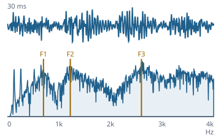

Eine Stimme aus Physik, nicht aus Aufnahmen
Funktionsübersicht für die Präsentation des envisionz-Frameworks, Stand 28.09.2026. Formantsynthese in reinem Java nach dem Quelle-Filter-Modell: Stimmlippenpuls und Rauschen als Anregung, Formantfilter als Vokaltrakt, deutsche Graphem-Phonem-Umsetzung und Satzmelodie – beliebiger deutscher Text wird hörbar. Je Verfahren: Zweck, Methoden, Einsatz im Framework, Anwendungen, Beispiele. Die Beispiele sind gekürzt.

Voice synthetisiert: der Vokal a als Wellenform und Spektrum, die Formantlagen aus Vowel markiert.Grundsätze des Moduls
Die Stimme als Fassade envisionz.voice
Voice – Text, Wort, Vokalfolge
speak spricht beliebigen deutschen Text über die ganze Kette Normalisierung → Graphem-Phonem-Umsetzung → Prosodie → Lautsynthese. say spricht ein einzelnes Wort, sing und synthesize erzeugen Vokalfolgen mit Tonhöhe. Ergebnis ist immer float[]-PCM; writeWav geht ohne Tonausgabe, play braucht einen Mischer. Stellschrauben für das Hören: Konsonantenpegel, Vokalanhebung, Behauchung der Plosive, Vokalgleiten, Sprechtempo.
Methoden
Voice(profil, saat),speak(text[, rate]),setSpeechRate(rate)(0,4…1,5)say(wort[, f0Kontur]),sayShaped(wort, vokalDehnung),sing(vokale, sekundenJeVokal),synthesize(List<Note>)setConsonantGain,setVowelBoost,setPlosiveAspiration,setVowelGlideVoice.writeWav(samples, Path),Voice.play(samples),playOn(samples, mischerName),listMixers(),toPcm16(samples)
Eingesetzt in
Wofür
Einen erzeugten Satz sofort hörbar machen; Dialogzeilen als WAV; später die Stimme einer Figur.
Beispiel 1 – einen Satz sprechen und sichern
Voice v = new Voice(VoiceProfile.neutral(), 1L);
float[] s = v.speak("Zugriff gewährt. Wie geht es weiter?");
Voice.writeWav(s, Path.of("satz.wav"));
Voice.play(s); // nur mit TonausgabeBeispiel 2 – Vokalfolge
float[] a = new Voice(VoiceProfile.neutral(), 7L).sing("aeiou", 0.4);Stimmprofil envisionz.voice.core
VoiceProfile – ein Regler von Maschine zu Mensch
Grundfrequenz, Melodiespanne, Formantskalierung (Traktlänge), Behauchung und der Hauptregler Menschlichkeit 0…1. Aus ihm werden Jitter (0,004…0,025), Shimmer (0,010…0,080) und Melodietiefe (0,2…1,0) linear abgeleitet; bei 0 spricht die Stimme fast monoton. neutral() ist die Bezugsstimme. Hintergrund, Formeln und Pseudocode →
Methoden
VoiceProfile.neutral()und weitere VoreinstellungenwithBaseF0(hz),withFormantScale(s),withHumanity(h)jitter(),shimmer(),prosodyDepth(),breathiness()
Eingesetzt in
Wofür
Eine Stimme, deren Klang mit einem einzigen Wert von maschinell zu lebendig wandert.
Beispiel – dieselbe Zeile, zwei Stufen
float[] roboter = new Voice(VoiceProfile.neutral().withHumanity(0.0), 1L).speak("Kennfeld geladen.");
float[] lebendig = new Voice(VoiceProfile.neutral().withHumanity(0.9), 1L).speak("Kennfeld geladen.");Quelle und Filter envisionz.voice.core
GlottalSource, NoiseSource, Formant, Synthesizer
Die Anregung ist ein Rosenberg-Puls mit steuerbarer Grundfrequenz, Öffnungsquotient, Jitter und Shimmer – mit Obertönen, denn ein Filter kann nur verstärken, was da ist. Rauschen mit einstellbarer Färbung trägt Frikative und Behauchung. Jeder Formant ist ein RBJ-Bandpass zweiter Ordnung, dessen Koeffizienten je Abtastwert gesetzt werden können. Der Synthesizer summiert die Formanten parallel nach Klatt, betont um +6 dB/Oktave vor (Lippenabstrahlung) und gleitet zwischen Formantzielen (Koartikulation). Hintergrund, Formeln und Pseudocode →
Methoden
GlottalSource(rate, saat),setF0,setOpenQuotient,setJitter,setShimmer,next()NoiseSource(saat),setColor(c);Formant(rate),set(freqHz, bandbreiteHz),process(x)Synthesizer(saat),SAMPLE_RATE,setTarget(freq[], bw[]),setGlide,setF0Target,snapF0setSourceMix(stimmhaft, rauschen),setBreathiness,setNoiseColor,render(out, offset, n, stimmhaft)
Eingesetzt in
Synthesizer.SAMPLE_RATE für die Dauer der Hörprobeintern: Voice, PhonemeSynthWofür
Vokale und Konsonanten aus denselben Bausteinen; Lehrbeispiel, woher Klangfarbe kommt.
Lautkette envisionz.voice.core · envisionz.voice.text
PhonemeSynth, Phoneme, Phonemes, Vowel, WordParser
Konsonanten sind Ereignisse, keine stehenden Formanten: Frikative sind gefiltertes Rauschen, Plosive Verschlussstille plus Burst mit Locus-Formanten (stimmlose zusätzlich mit Hauch), Nasale ein tiefer stimmhafter Formant. Normiert wird auf das 95. Perzentil (Ziel 0,9) mit weichem Begrenzer bis 1,0, damit kurze laute Zischlaute die Vokale nicht erdrücken. Vowel hält F1…F3 für A, E, I, O, U, Ä, Ö, Ü und Schwa. Hintergrund, Formeln und Pseudocode →
Methoden
PhonemeSynth(synth, profil),render(folge, f0Kontur),setConsonantGain(0…1),setVowelBoost(1…2,5)Phoneme.vowel,fricative,plosive,nasal,silence,withDurationPhonemes.get(symbol),has(symbol);WordParser.parse(wort)– längster Treffer zuerstVowel.A…Vowel.SCHWA,formants(),Vowel.bandwidths()
Eingesetzt in
Wofür
Wörter und Silben aus Lautsymbolen zusammensetzen, einzelne Laute gezielt abstimmen.
Von Text zu Lauten envisionz.voice.text
TextNormalizer, G2P, RuleG2pDe
Der Normalisierer schreibt Zahlen 0…99 in deutscher Wortfolge aus („einundzwanzig“), löst Abkürzungen auf und macht aus Satzzeichen Pausenmarken __S__, __Q__, __K__. Die regelbasierte Umsetzung arbeitet nach dem längsten Treffer und kontextabhängig: sch/ch/tsch, sp-/st- am Wortanfang, Diphthonge, langes ie, stummes Dehnungs-h, Doppelkonsonanten, ck, z, x, qu, ng und die Auslautverhärtung. Hintergrund, Formeln und Pseudocode →
Methoden
TextNormalizer.normalize(text)new RuleG2pDe().convert(normalisierterText)→List<G2P.Unit>wordToPhonemes(wort)→ Lautsymbole
Eingesetzt in
Wofür
Deutschen Text in eine Lautfolge mit Satzgrenzen übersetzen.
Beispiel – die Reihenfolge ist nicht wahlfrei
String norm = TextNormalizer.normalize("Bereit?"); // Fragezeichen wird zu __Q__
List<G2P.Unit> einheiten = new RuleG2pDe().convert(norm); // ohne normalize klingt die Frage wie eine AussageSatzmelodie envisionz.voice.text
Prosody – Aussagen fallen, Fragen steigen
Legt Dauern und Tonhöhen über die Lautfolge: Deklination bei Aussagen, Anstieg am Ende einer Frage, Pausen von 0,14 s (Wort), 0,20 s (Komma) und 0,22 s am Satzende (nach einer Frage 0,18 s), dazu eine Dehnung der letzten Silbe vor jeder Grenze. Kontur und Dehnung werden mit der Melodietiefe des Profils skaliert; der Wortakzent ist vorhanden, aber abgeschaltet (STRESS_ENABLED = false). Hintergrund, Formeln und Pseudocode →
Methoden
new Prosody(prosodyDepth).shape(einheiten)→Shaped(phonemes, f0)
Eingesetzt in
Wofür
Verständlichkeit: Satzmelodie trägt mehr davon als Klangqualität.
Kommandozeile envisionz.voice.VoicePlayer
VoicePlayer – dieselbe Klangkette ohne fremden Medienspieler
Ohne Argument eine Selbsttestfolge (Sinus, langer Vokal, Vokalfolge, Wörter). Befehle sine, vowel, say, speak, compare, mixers, on und wav; wav und mixers gehen auch ohne Tonausgabe.
Beispiele
java -cp bin envisionz.voice.VoicePlayer say mama
java -cp bin envisionz.voice.VoicePlayer wav out.wav mama
java -cp bin envisionz.voice.VoicePlayer mixersEinsatzmatrix im Framework
Welche Module welche Teile heute nutzen, im Quelltext gezählt (ohne Proben).
| Modul | Voice | Stimmprofil | Quelle / Filter | Lautkette | Text zu Lauten | Satzmelodie | Wofür |
|---|---|---|---|---|---|---|---|
| app-neural | ● | ● | ● | Hörprobe: der vom Sequenzmodell erzeugte Text wird gesprochen |